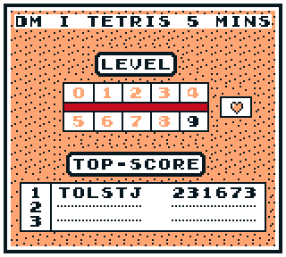
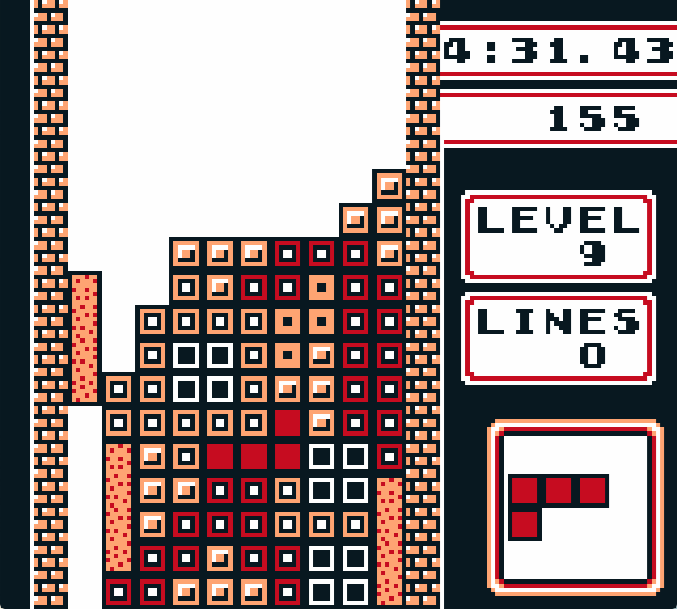
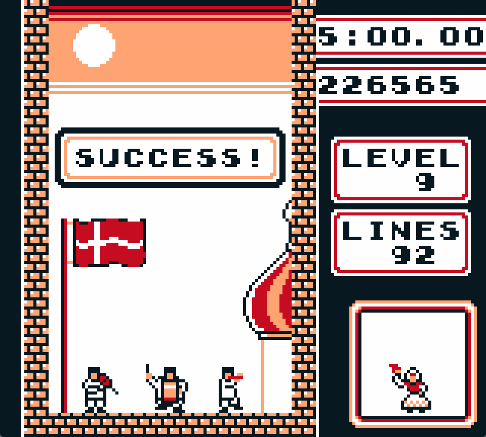

About the ROM patch
DM i Tetris - Qualification ROM is a custom Game Boy Tetris ROM created for the qualifying round of DM i Tetris 2025, the Danish Tetris Championship. Players select a starting level and time limit, then aim to survive and earn the highest possible score before time runs out.
The project began as a focused event tool and grew into a streamlined, reusable Tetris codebase with custom presentation, end screens, animation, and music.
Read the full development article for the technical background, design process, and debugging stories.
Features
Selectable qualification time from one to nine minutes.Selectable starting level and a Heart Mode toggle.Visible countdown timer with final-five warning beeps.
Pause and next-piece controls disabled for consistent runs.A unified leaderboard for every starting level.
Custom Good Game and animated Success screens .
The Danish national anthem for qualifying high scores.
…
Contributors
Programming Tolstoj Music Tolstoj Testers Tolstoj, Toni, Anders, Pascal
Downloads
i
Supply your own legally obtained Game Boy Tetris ROM (v 1.1). The patch does not contain the original game.
Download all files as ZIP
Patch: .bps → .gb
Download DM_i_Tetris.bps
Open Marc Robledo’s ROM Patcher ↗ .
Choose your original Game Boy Tetris (v 1.1) ROM under ROM file .
Choose the BPS file under Patch file .
Select Apply patch and save the patched ROM.
i If the patcher reports a source-ROM mismatch, verify that the base ROM is correct and unmodified.
Modify the ROM with TREP
TREP can inspect and modify the patched ROM without rebuilding the source project. Load the patched ROM together with .sym.trep.json.map
Open TREP
Tip
Use the DM i Tetris LUT to let the Danish flag shine proudly. It maps the four shades from brightest to darkest as follows:
White RGB (255, 255, 255) · Hex #FFFFFF Chickadee RGB (255, 165, 115) · Hex #FFA573 Dannebrog Red RGB (198, 12, 32) · Hex #C60C20 Black RGB (0, 0, 0) · Hex #000000
These screenshots use the DM i Tetris LUT .

Level selection and scoreboard. 
Timer and score tracking during play. 
A post-success celebration, with people appearing when specific conditions are met.
Editorial note: AI usage
AI was used to correct grammar and punctuation and to improve sentence structure on this page. No AI was used during the development of the project.